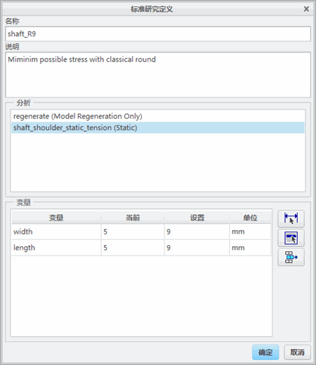
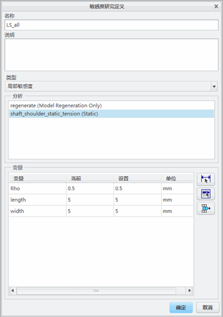

练习: 定义设计研究
目标
成功完成此练习后，您将能够：
- 执行“敏感度与优化”(Sensitivity and Optimization) 研究。
假定背景
在这个示例中，您将尝试使用 Creo Simulate 的“敏感度与优化”(Sensitivity and Optimization) 研究功能来最小化结构件中的应力集中。该结构件是承受拉伸力的简化轴肩，由公称应力为 100 MPa 的不锈钢制成。
已在模型中定义了载荷和约束。因为您仅分析轴的一个层切面，所以需要一些约束。而且，之前也为模型定义了“静态分析”。可利用此“静态分析”(Static Analysis) 检查模型中的当前应力，并可作为“敏感度与优化”(Sensitivity and Optimization) 研究的基础分析使用。
“关闭窗口”(Close Window) “拭除未显示的”(Erase Not Displayed)
“拭除未显示的”(Erase Not Displayed) 
 Simulate_Analysis\DesignStudy
Simulate_Analysis\DesignStudy
 SHAFT_SHOULDER_SIMULATE.PRT
SHAFT_SHOULDER_SIMULATE.PRT
|
|
||
 |
请 Creo Parametric 用户打开 SHAFT_SHOULDER.PRT | |
|
|
||
-
任务 1. 创建网格控制并网格化模型。
1. 在功能区中，选择“精细模型”(Refine Model) 选项卡。
2. 在 AutoGEM 组中从“控制”(Controls) 下拉菜单中选择“最大元素尺寸”(Maximum Element Size)
 。将出现“最大元素尺寸控制”(Maximum Element Size Control) 对话框。
。将出现“最大元素尺寸控制”(Maximum Element Size Control) 对话框。
3. 从“参考”(References) 下拉菜单中选择“分量”(Components)。
4. 在“元素尺寸”(Element Size) 部分的字段中键入 10。
5. 单击“确定”(OK)。
6. 在功能区中，选择“精细模型”(Refine Model) 选项卡。
7. 在 AutoGEM 组中从“控制”(Controls) 下拉菜单中选择“最大元素尺寸”(Maximum Element Size)
。将出现“最大元素尺寸控制”(Maximum Element Size Control) 对话框。
8. 在模型中，选择显示的曲面。
9. 在“最大元素尺寸控制”(Maximum Element Size Control) 对话框中的“元素尺寸”(Element Size) 部分的字段中键入 3。
10. 单击“确定”(OK)。
11. 在功能区中，选择“精细模型”(Refine Model) 选项卡。
12. 从 AutoGEM 组中单击AutoGEM
 。将出现 AutoGEM 对话框。
。将出现 AutoGEM 对话框。
13. 单击“创建”(Create)。
14. 检查生成的网格。单击“关闭”(Close) 以关闭所有对话框。提示保存网格时单击“否”(No)。
-
任务 2. 定义并运行静态分析。
1. 在功能区中，选择“主页”(Home) 选项卡。
2. 在“运行”(Run) 组中单击“分析和研究”(Analyses and Studies)
 。将出现“分析和设计研究”(Analyses and Design Studies) 对话框。
。将出现“分析和设计研究”(Analyses and Design Studies) 对话框。
3. 单击“文件”(File) > “新建静态分析”(New Static)。将出现“静态分析定义”(Static Analysis Definition) 对话框。
4. 完成以下步骤：
- 在“名称”(Name) 字段中键入 shaft_shoulder_static_tension。
- 选择显示在“约束集/元件”(Constraint Set/Component) 和“载荷集/元件”(Load Set/Component) 部分中的约束集和载荷集。
- 单击“收敛”(Convergence) 选项卡，然后从“方法”(Method) 下拉菜单中单击“单通道自适应”(Single-Pass Adaptive)。
- 选择“输出”(Output) 选项卡。
- 在“出图”(Plot) 部分的“绘制栅格”(Plotting Grid) 字段中键入 10。
5. 单击“确定”(OK) 返回到“分析和设计研究”(Analyses and Design Studies) 对话框。
6. 单击“配置运行设置”(Configure Run Settings)
 。将出现“运行设置”(Run Settings) 对话框。
。将出现“运行设置”(Run Settings) 对话框。
7. 默认情况下，结果和临时输出目录被设置在工作目录中。两种分析都储存在此位置。单击“确定”(OK)。
8. 在“分析和设计研究”(Analyses and Design Studies) 对话框中选择 shaft_shoulder_static_tension，然后单击“开始运行”(Start Run)
 。单击“是”(Yes) 以运行交互诊断。
。单击“是”(Yes) 以运行交互诊断。
9. 分析完成后，单击“显示研究状况”(Display Study Status)
 查看汇总报告。仔细检查在汇总文件中显示的信息。请注意，发现最大 von Mises 应力十分接近 150 MPa。公称应力实际为 100 MPa，而我们的应力集中因子为 1.5。因此，我们的设计需要改进。
查看汇总报告。仔细检查在汇总文件中显示的信息。请注意，发现最大 von Mises 应力十分接近 150 MPa。公称应力实际为 100 MPa，而我们的应力集中因子为 1.5。因此，我们的设计需要改进。
10. 关闭所有对话框并返回至“分析和设计研究”(Analyses and Design Studies) 对话框。
-
任务 3. 创建用于静态分析的条纹图。
1. 在“分析和设计研究”(Analyses and Design Studies) 窗口中选择 shaft_shoulder_static_tension。
2. 单击“审阅结果”(Review Results) 。将出现“结果窗口定义”(Result Window Definition) 对话框。
3. 创建 von Mises 应力的结果窗口，并检查所显示的结果。
4. 单击“文件”(File) > “退出结果”(Exit Results) 返回至 Creo Simulate。在“消息”(Message) 对话框中单击“否”(No)。

-
任务 4. 定义并运行标准的设计研究。
1. 在“分析和设计研究”(Analyses and Design Studies) 对话框中，单击“文件”(File) > “新建标准设计研究”(New Standard Design Study)。“标准研究定义”(Standard Study Definition) 对话框随即出现。在“名称”(Name) 字段中键入 shaft_R9。
2. 在“分析”(Analyses) 部分选择 shaft_shoulder_static_tension (Static)。
3. 在“变量”(Variables) 部分单击“选择尺寸”(Select Dimension) 。在模型中单击可显示如图所示的所有模型尺寸。
4. 在模型中，选择显示的长度尺寸。
已在 Creo Parametric 中使用锥形“倒圆角”特征创建了凹槽。这就是可以使用三个尺寸 (长度、宽度和曲率半径 rho) 的原因。
5. 重复前两步，然后选择锥形圆角的宽度尺寸。
您不能拾取同一个尺寸两次。Creo Simulate 可从选择过程中消除已经为设计变量拾取的任何尺寸。
6. 在“标准研究定义”(Standard Study Definition) 对话框的“设置”(Setting) 字段中为所显示的长度和宽度键入 9。
7. 单击“确定”(OK)。
8. 在“分析和设计研究”(Analyses and Design Studies) 对话框中选择 shaft_R9，然后单击“开始运行”(Start Run)
。单击“是”(Yes) 以运行交互诊断。
9. 分析完成后，单击“显示研究状况”(Display Study Status)
查看汇总报告。请注意，发现最大 von Mises 应力十分接近 123 MPa。公称应力实际为 100 MPa，而我们的应力集中因子为 1.23。因此，我们的设计仍需要改进。
10. 关闭所有对话框并返回至“分析和设计研究”(Analyses and Design Studies) 对话框。
-
任务 5. 创建用于标准设计研究的条纹图。
1. 在“分析和设计研究”(Analyses and Design Studies) 窗口中选择 shaft_R9。
2. 单击“审阅结果”(Review Results) 。将出现“结果窗口定义”(Result Window Definition) 对话框。
3. 创建 von Mises 应力的结果窗口，并检查所显示的结果。
4. 单击“文件”(File) > “退出结果”(Exit Results) 返回至 Creo Simulate。在“消息”(Message) 对话框中单击“否”(No)。
-
任务 6. 定义并运行局部敏感度研究。
1. 在“分析和设计研究”(Analyses and Design Studies) 对话框中，单击“文件”(File) > “新建敏感度设计研究”(New Sensitivity Design Study)。“敏感度研究定义”(Sensitivity Study Definition) 对话框随即出现。
2. 完成以下步骤：
- 在“名称”(Name) 字段中键入 LS_all。
- 从“类型”(Type) 下拉菜单中选择“局部敏感度”(Local Sensitivity)。
3. 在“分析”(Analyses) 部分选择 shaft_shoulder_static_tension (Static)。
4. 在“变量”(Variables) 部分单击“选择尺寸”(Select Dimension) 。在模型中单击可显示所有模型尺寸。
5. 在模型中，选择显示的长度尺寸。
6. 重复前两步，然后选择锥形圆角的宽度尺寸和曲率半径 rho。
7. 在“敏感度研究定义”(Sensitivity Study Definition) 对话框中，将“当前”值用作“设置”值，如图所示。
8. 单击“确定”(OK)。
9. 在“分析和设计研究”(Analyses and Design Studies) 对话框中选择 LS_all，然后单击“开始运行”(Start Run)
。单击“是”(Yes) 以运行交互诊断。
10. 分析完成后，单击“显示研究状况”(Display Study Status)
查看汇总报告。
11. 关闭所有对话框并返回至“分析和设计研究”(Analyses and Design Studies) 对话框。
-
任务 7. 创建用于局部敏感度研究的图形。
1. 在“分析和设计研究”(Analyses and Design Studies) 窗口中选择 LS_all。
2. 单击“审阅结果”(Review Results) 。将出现“结果窗口定义”(Result Window Definition) 对话框。
3. 选择“数量”(Quantity) 选项卡。
4. 单击“测量”(Measures) 。将出现“测量”(Measures) 对话框。
5. 选择 max_stress_vm。
6. 单击“确定”(OK) 返回到“结果窗口定义”(Result Window Definition) 对话框。
7. 从“图形横坐标 (水平) 轴”(Graph Abscissa (Horizontal) Axis) 的次级下拉菜单中选择长度：SHAFT_SHOULDER_SIMULATE。
8. 单击“确定并显示”(OK and Show) 显示结果。
9. 创建宽度的图形并检查所显示的结果。
10. 创建曲率半径 rho 的图形，并检查所显示的结果。
11. 单击“文件”(File) > “退出结果”(Exit Results) 返回至 Creo Simulate。在“消息”(Message) 对话框中单击“否”(No)。
-
任务 8. 定义并运行全局敏感度研究。
1. 在“分析和设计研究”(Analyses and Design Studies) 对话框中，单击“文件”(File) > “新建敏感度设计研究”(New Sensitivity Design Study)。“敏感度研究定义”(Sensitivity Study Definition) 对话框随即出现。
2. 完成以下步骤：
- 在“名称”(Name) 字段中键入 GS_length。
- 校验已从“类型”(Type) 下拉菜单中选择“全局敏感度”(Global Sensitivity)。
3. 在“分析”(Analyses) 部分选择 shaft_shoulder_static_tension (Static)。
4. 在“变量”(Variables) 部分单击“选择尺寸”(Select Dimension) 。在模型中单击可显示所有模型尺寸。
5. 在模型中，选择显示的长度尺寸。
6. 在“敏感度研究定义”(Sensitivity Study Definition) 对话框中，在“开始”(Start) 字段中键入 1，在“结束”(End) 字段中键入 40，在“步数”(Steps) 字段中键入 5，如图所示。
7. 单击“选项”(Options)。“设计研究选项”(Design Study Options) 对话框随即出现。
8. 单击“模型形状动画”(Shape Animate the Model)。“是否继续执行步骤 2?”(Continue to Step 2?) 对话框随即出现。
9. 单击“接受值”(Accept Value)
 。
。
10. 重复五个步骤。在最后一个步骤，单击“是”(Yes) 可将模型恢复至其原始形状。
11. 在“设计研究选项”(Design Study Options) 对话框中，单击“关闭”(Close)。
12. 在“敏感度研究定义”(Sensitivity Study Definition) 对话框中，单击“确定”(OK)。
13. 对剩余的两个设计变量 (宽度和曲率半径 rho) 重复这一过程。使用下列名称和范围：
- 宽度
- 名称：GS_width
- 范围：4 至 9 mm
- 曲率半径 rho
- 名称：GS_rho
- 范围：0.1 至 0.9 mm
14. 在“分析和设计研究”(Analyses and Design Studies) 对话框中选择 GS_length，然后单击“开始运行”(Start Run)
。单击“是”(Yes) 以运行交互诊断。
15. 分析完成后，单击“显示研究状况”(Display Study Status)
查看汇总报告。
16. 关闭所有对话框并返回至“分析和设计研究”(Analyses and Design Studies) 对话框。
17. 在“分析和设计研究”(Analyses and Design Studies) 对话框中，运行 GS_width 和 GS_rho。
18. 关闭所有对话框并返回至“分析和设计研究”(Analyses and Design Studies) 对话框。
-
任务 9. 创建用于全局敏感度研究的图形。
1. 在“分析和设计研究”(Analyses and Design Studies) 窗口中选择 GS_length。
2. 单击“审阅结果”(Review Results) 。将出现“结果窗口定义”(Result Window Definition) 对话框。
3. 选择“数量”(Quantity) 选项卡。
4. 单击“测量”(Measures) 。将出现“测量”(Measures) 对话框。
5. 选择 max_stress_vm。
6. 单击“确定”(OK) 返回到“结果窗口定义”(Result Window Definition) 对话框。
7. 从“图形横坐标 (水平) 轴”(Graph Abscissa (Horizontal) Axis) 的次级下拉菜单中选择长度：SHAFT_SHOULDER_SIMULATE。
8. 单击“确定并显示”(OK and Show) 显示结果。
9. 创建宽度的图形并检查所显示的结果。
10. 创建曲率半径 rho 的图形，并检查所显示的结果。
确定应使用哪个范围的值来将应力降低至公称值 100 MPa 以下。
11. 单击“文件”(File) > “退出结果”(Exit Results) 返回至 Creo Simulate。在“消息”(Message) 对话框中单击“否”(No)。
-
任务 10. 定义并运行优化设计研究。
1. 在“分析和设计研究”(Analyses and Design Studies) 对话框中，单击“文件”(File) > “新建优化设计研究”(New Optimization Design Study)。“优化研究定义”(Optimization Study Definition) 对话框随即出现。
2. 完成以下步骤：
- 在“名称”(Name) 字段中键入 shaft_optimization。
- 校验已从“类型”(Type) 下拉菜单中选择“优化”(Optimization)。
- 在“目标”(Goal) 部分，从下拉菜单中选择“最小化”(Minimize)，然后校验 total_mass 已显示在相邻字段中。
3. 在“设计极限”(Design Limits) 部分单击“添加行”(Add Row) 。将出现“测量”(Measures) 对话框。
4. 选择 max_stress_vm。
5. 单击“确定”(OK) 返回“优化研究定义”(Optimization Study Definition) 对话框。
6. 校验 < 已显示在相邻字段中。在“值”(Value) 字段中键入 100。
7. 在“变量”(Variables) 部分单击“选择尺寸”(Select Dimension) 。在模型中单击可显示所有模型尺寸。
8. 在模型中，选择为前一个研究选择的三个尺寸：宽度、长度和 rho。
9. 在“敏感度研究定义”(Sensitivity Study Definition) 对话框中，定义如图所示的范围。
10. 单击“选项”(Options)。“设计研究选项”(Design Study Options) 对话框随即出现。
11. 如图所示完成字段。
“优化收敛”(Optimization Convergence) 可控制最优解决方案的质量。在这种情况下，您将从 100 MPa 以下寻找更低的应力。但是，10 或 15 MPa 实际上已低于 100 MPa。使用这一百分比，您可将该值控制在 95 到 105 MPa 之间。
12. 在“设计研究选项”(Design Study Options) 对话框中，单击“关闭”(Close)。
13. 在“敏感度研究定义”(Sensitivity Study Definition) 对话框中，单击“确定”(OK)。
14. 在“分析和设计研究”(Analyses and Design Studies) 对话框中选择 shaft_optimization，然后单击“开始运行”(Start Run)
。单击“是”(Yes) 以运行交互诊断。
15. 分析完成后，单击“显示研究状况”(Display Study Status)
查看汇总报告。请注意，在每个最优迭代的汇总报告中，Creo Simulate 可使用在研究定义中指定的任何值。因此，您会在每次迭代中找到三个变量更改。检查汇总报告中的全部四个迭代。但是，最重要的是要找到为上一个迭代报告的值。
而且，要注意在汇总报告底部的消息，消息的内容为“对初始设计未找到不违反任何限制的改进”。实际原因为：为了降低应力，Creo Simulate 不得不添加更多的材料。因此，将会报告质量上的增加，尽管您已将“优化设计研究”(Optimization Design Study) 目标设置为最小化总质量测量。
16. 关闭所有对话框并返回至“分析和设计研究”(Analyses and Design Studies) 对话框。
-
任务 11. 创建用于标准设计研究的条纹图。
1. 在“分析和设计研究”(Analyses and Design Studies) 窗口中选择 shaft_optimization。
2. 单击“审阅结果”(Review Results) 。将出现“结果窗口定义”(Result Window Definition) 对话框。
3. 按照找到的最优解决方案，创建 von Mises 应力的结果窗口，并检查所显示的结果。
请注意，现在模型的最大 von Mises 应力为 100 MPa。这就是您要寻找的解决方案。
4. 单击“文件”(File) > “退出结果”(Exit Results) 返回至 Creo Simulate。在“消息”(Message) 对话框中单击“否”(No)。
练习就此结束。